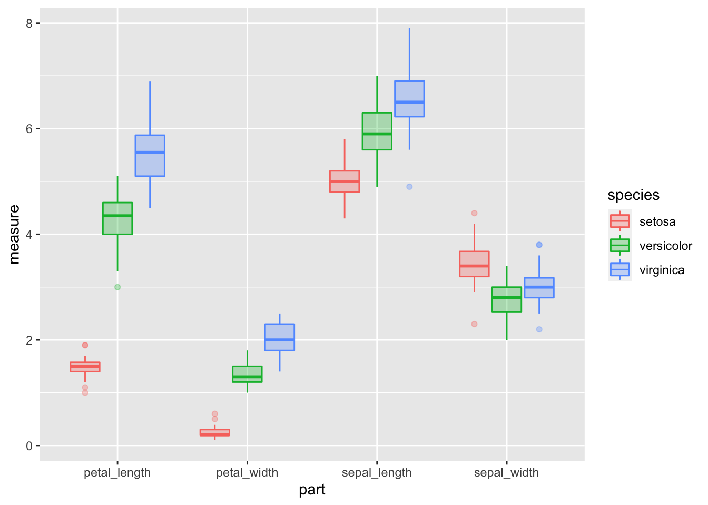
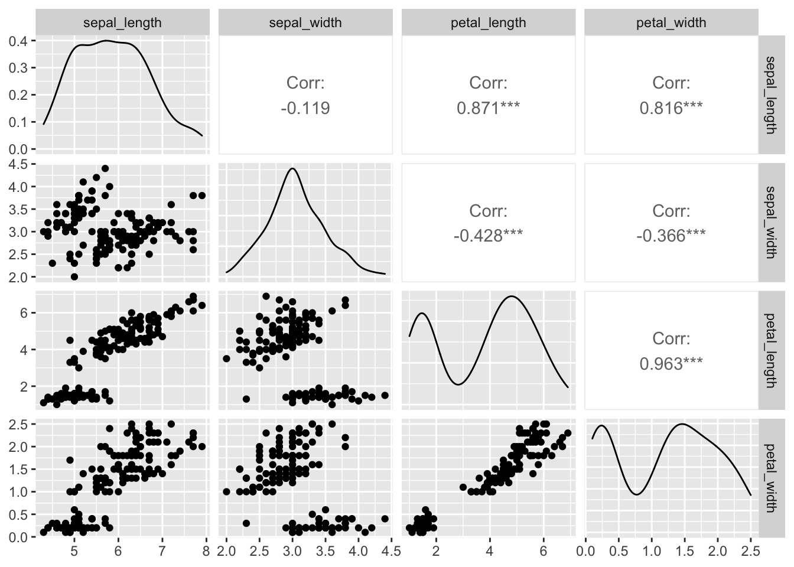

##Load libraries We will read in the main files and load the libraries as we have worked with so far.
# One new package for summary stats
# install.packages("broom")
# install.packages("GGally")
# install.packages("car")
# install.packages("gvlma")
# install.packages("corrplot")
# install.packages("gvlma")
# load the libraries each time you restart R
library(tidyverse)
library(readxl)
library(lubridate)
library(scales)
library(skimr)
library(janitor)
library(patchwork)
# library(reshape2)
library(broom)
library(GGally)
library(corrplot)
library(car)
library(gvlma)# read in the file
iris.df <- read_csv("data/iris.csv") %>%
clean_names()##
## ── Column specification ────────────────────────────────────────────────────────
## cols(
## Sepal.Length = col_double(),
## Sepal.Width = col_double(),
## Petal.Length = col_double(),
## Petal.Width = col_double(),
## Species = col_character()
## )glimpse(iris.df)## Rows: 150
## Columns: 5
## $ sepal_length <dbl> 5.1, NA, 4.7, 4.6, 5.0, 5.4, 4.6, 5.0, 4.4, 4.9, 5.4, 4.8…
## $ sepal_width <dbl> 3.5, 3.0, 3.2, 3.1, 3.6, 3.9, 3.4, 3.4, 2.9, 3.1, 3.7, 3.…
## $ petal_length <dbl> 1.4, 1.4, 1.3, 1.5, 1.4, 1.7, 1.4, 1.5, 1.4, 1.5, 1.5, 1.…
## $ petal_width <dbl> 0.2, 0.2, 0.2, 0.2, 0.2, 0.4, 0.3, 0.2, 0.2, 0.1, 0.2, 0.…
## $ species <chr> "setosa", "setosa", "setosa", "setosa", "setosa", "setosa…##Summary Statistics for the better look ##So this is a lot different than thinking about data from excel
Lets try to do the summary stats on the data now and see how it differs
# the data you want to look at
skim(iris.df)| Name | iris.df |
| Number of rows | 150 |
| Number of columns | 5 |
| _______________________ | |
| Column type frequency: | |
| character | 1 |
| numeric | 4 |
| ________________________ | |
| Group variables | None |
Variable type: character
| skim_variable | n_missing | complete_rate | min | max | empty | n_unique | whitespace |
|---|---|---|---|---|---|---|---|
| species | 0 | 1 | 6 | 10 | 0 | 3 | 0 |
Variable type: numeric
| skim_variable | n_missing | complete_rate | mean | sd | p0 | p25 | p50 | p75 | p100 | hist |
|---|---|---|---|---|---|---|---|---|---|---|
| sepal_length | 1 | 0.99 | 5.85 | 0.83 | 4.3 | 5.1 | 5.80 | 6.4 | 7.9 | ▆▇▇▅▂ |
| sepal_width | 0 | 1.00 | 3.06 | 0.44 | 2.0 | 2.8 | 3.00 | 3.3 | 4.4 | ▁▆▇▂▁ |
| petal_length | 0 | 1.00 | 3.76 | 1.77 | 1.0 | 1.6 | 4.35 | 5.1 | 6.9 | ▇▁▆▇▂ |
| petal_width | 0 | 1.00 | 1.20 | 0.76 | 0.1 | 0.3 | 1.30 | 1.8 | 2.5 | ▇▁▇▅▃ |
# this will add an index to the dataframe so you know what individual is which
iris_long.df <- iris.df %>%
mutate(sample = row_number()) %>%
gather(part, measure, -species, -sample)# Box Plots of data
iris_long.df %>%
ggplot(aes(x = part, y = measure, color = species, fill=species))+
geom_boxplot(alpha=0.3) ## Warning: Removed 1 rows containing non-finite values (stat_boxplot).
So I think this is premature but some people like to test the normality of the data but really you should be assessing the normality of the residuals. But here it goes…
# turn off scientific notaton
options(scipen = 999)
# to turn back on
#options(scipen = 0)
# Test for normality of each group and store in shapirowilktests
# This uses the broom package to get clean output of the test
iris_long.df %>% group_by(species, part) %>% do(tidy(shapiro.test(.$measure)))## # A tibble: 12 x 5
## # Groups: species, part [12]
## species part statistic p.value method
## <chr> <chr> <dbl> <dbl> <chr>
## 1 setosa petal_length 0.955 0.0548 Shapiro-Wilk normality test
## 2 setosa petal_width 0.800 0.000000866 Shapiro-Wilk normality test
## 3 setosa sepal_length 0.977 0.456 Shapiro-Wilk normality test
## 4 setosa sepal_width 0.972 0.272 Shapiro-Wilk normality test
## 5 versicolor petal_length 0.966 0.158 Shapiro-Wilk normality test
## 6 versicolor petal_width 0.948 0.0273 Shapiro-Wilk normality test
## 7 versicolor sepal_length 0.978 0.465 Shapiro-Wilk normality test
## 8 versicolor sepal_width 0.974 0.338 Shapiro-Wilk normality test
## 9 virginica petal_length 0.962 0.110 Shapiro-Wilk normality test
## 10 virginica petal_width 0.960 0.0870 Shapiro-Wilk normality test
## 11 virginica sepal_length 0.971 0.258 Shapiro-Wilk normality test
## 12 virginica sepal_width 0.967 0.181 Shapiro-Wilk normality testThis info is from:
http://stackoverflow.com/questions/29697009/correlation-matrix-plot-with-ggplot2
and
https://www.r-bloggers.com/plot-matrix-with-the-r-package-ggally/
and
http://ggobi.github.io/ggally/#canonical_correlation_analysis
## Warning: Removed 1 rows containing non-finite values (stat_density).## Warning in ggally_statistic(data = data, mapping = mapping, na.rm = na.rm, :
## Removing 1 row that contained a missing value
## Warning in ggally_statistic(data = data, mapping = mapping, na.rm = na.rm, :
## Removing 1 row that contained a missing value
## Warning in ggally_statistic(data = data, mapping = mapping, na.rm = na.rm, :
## Removing 1 row that contained a missing value## Warning: Removed 1 rows containing missing values (geom_point).
## Warning: Removed 1 rows containing missing values (geom_point).
## Warning: Removed 1 rows containing missing values (geom_point).
##Look at the correlation matrix
# correlation matrix of the data with only the numeric data in a dataframe
# the old way - the same really
# cor(setosa.df[,1:4], method = "pearson") # , method = c("pearson", "kendall", "spearman")
# need to only have numeric varaibles
iris.df %>% select(-species) %>% cor() ## sepal_length sepal_width petal_length petal_width
## sepal_length 1 NA NA NA
## sepal_width NA 1.0000000 -0.4284401 -0.3661259
## petal_length NA -0.4284401 1.0000000 0.9628654
## petal_width NA -0.3661259 0.9628654 1.0000000petals.cor <- cor.test(iris.df$petal_length, iris.df$petal_width)
# can see by calling model
petals.cor##
## Pearson's product-moment correlation
##
## data: iris.df$petal_length and iris.df$petal_width
## t = 43.387, df = 148, p-value < 0.00000000000000022
## alternative hypothesis: true correlation is not equal to 0
## 95 percent confidence interval:
## 0.9490525 0.9729853
## sample estimates:
## cor
## 0.9628654# other way
cor.test(~ petal_length + petal_width, iris.df)##
## Pearson's product-moment correlation
##
## data: petal_length and petal_width
## t = 43.387, df = 148, p-value < 0.00000000000000022
## alternative hypothesis: true correlation is not equal to 0
## 95 percent confidence interval:
## 0.9490525 0.9729853
## sample estimates:
## cor
## 0.9628654# You can extract values from the cor.test() object like this:
petals.cor$estimate## cor
## 0.9628654petals.cor$p.value## [1] 0.00000000000000000000000000000000000000000000000000000000000000000000000000000000000004675004# This calculates the correlation coefficient and the degrees of freedom
iris.df %>% summarize(petal_cor = cor.test(petal_length, petal_width)$estimate,
nuts_df = cor.test(petal_length, petal_width)$parameter,
nuts.pvalue = cor.test(petal_length, petal_width)$p.value)## # A tibble: 1 x 3
## petal_cor nuts_df nuts.pvalue
## <dbl> <int> <dbl>
## 1 0.963 148 4.68e-86iris.df %>% do(tidy(cor.test(.$petal_length, .$petal_width))) ## # A tibble: 1 x 8
## estimate statistic p.value parameter conf.low conf.high method alternative
## <dbl> <dbl> <dbl> <int> <dbl> <dbl> <chr> <chr>
## 1 0.963 43.4 4.68e-86 148 0.949 0.973 Pearson'… two.sided# can be done with grouping variables as well